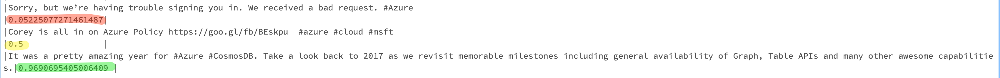

Introduction
In this article, we will learn about performing transformations on Spark streaming dataframes. We will be doing stream processing using Spark Structured Streaming, and sentiment analysis on text data with Cognitive Services APIs as an example.
Note:
I'm using Azure, but the code doesn't depend on it. Cognitive Services API for sentiment analysis and language detection were chosen for an illustrative example of operations that can be performed against streaming data. Cognitive Services is not a key part of this article, but it gives a good idea of what other actions can be performed with streaming dataframes, and it was pretty quick to setup and use. Feel free to experiment with any other sort of stream transformation or processing, as you will get an overall idea and understanding from this article.
In the previous articles, I showed creating a producer that published Twitter data into data ingestion system for events durability, and consuming those incoming events from Spark. We will be using that example as a foundation of this article, so take a look at the previous blog post.
Let’s do some stream processing

This time, we will apply a user defined function to the stream of tweets, that would call the corresponding APIs to determine language and sentiment of each tweet. This can be useful if we want to find the most positive or negative tweets, and react on them approprietly.
For example, let's look at the fragment from processing results:
Here we see that the tweet about some issues returned with the score really close to zero, and the tweet about amazing experience got the score really close to 1.
Explore the notebook
I've included the Databricks notebook with comments and explanations, feel free to scroll through:
Update
This article is now a part of Azure Databricks documentation, which you can view here.
Connect
Follow me on twitter @lenadroid if you found this article interesting or helpful. My direct messages are open, always happy to connect, feel free to reach out with any questions or ideas!